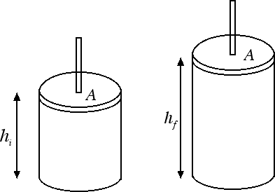
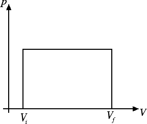

Termodinamica
Lavoro in una trasformazione termodinamica
In questa sezione vogliamo calcolare il lavoro che viene fatto in una trasformazione termodinamica. Cominciamo a considerare il caso di una espansione isobarica, ossia di una trasformazione che avviene a pressione p costante con aumento del volume V.

Durante la sua espansione il gas compie un lavoro positivo sul pistone che ora andremo a calcolare. Dal momento che la trasformazione avviene a pressione costante si tratta di calcolare il lavoro di una forza costante. Se il pistone ha una superficie di area A la pressione è p = F / A da cui la forza F = p · A. Pertanto il lavoro compiuto dal gas sul pistone è dato da L = F · s = p · A · s. Lo spostamento s del pistone si può ricavare dalla differenza tra le altezze finale hf e iniziale hi del cilindro. Il lavoro L compiuto dal gas sul pistone diventa perciò L = p · A · (hf - hi). Ora l'area A del pistone per l'altezza (iniziale o finale) del cilindro fornisce il volume (iniziale o finale) occupato dal gas. In conclusione il lavoro fatto sul pistone può essere riscritto come L = p · (Vf - Vi) = p · ΔV.
Può essere interessante un'interpretazione geometrica del risultato che abbiamo appena trovato. Rappresentiamo la trasformazione del gas sul piano di Clapeyron:

Il lavoro L = p · ΔV è geometricamente rappresentato dall'area del rettangolo in figura. Questa è una proprietà del tutto generale, valida per tutte le trasformazioni termodinamiche nel piano di Clapeyron: ad esempio il lavoro compiuto in una trasformazione isoterma sarà l'area sottesa dal ramo di iperbole che rappresenta tale trasformazione sul piano.